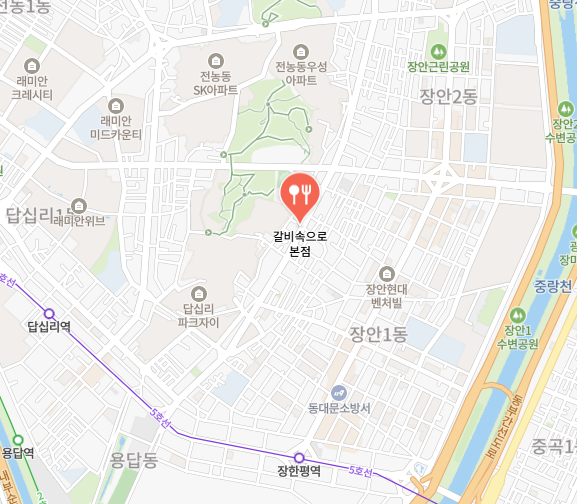

오시는 길
참숯갈비와 따뜻한 식사를 즐길 수 있는 갈비속으로 본점입니다.

갈비속으로 본점
주소 서울 동대문구 답십리동 786
영업시간 매일 10:00 ~ 22:00
대표메뉴 이동 양념갈비, 이동 생갈비, 꽃게된장찌개
가족 외식, 회식, 단체 모임 모두 편안하게 이용하실 수 있습니다.
참숯갈비와 따뜻한 식사를 즐길 수 있는 갈비속으로 본점입니다.

주소 서울 동대문구 답십리동 786
영업시간 매일 10:00 ~ 22:00
대표메뉴 이동 양념갈비, 이동 생갈비, 꽃게된장찌개
가족 외식, 회식, 단체 모임 모두 편안하게 이용하실 수 있습니다.